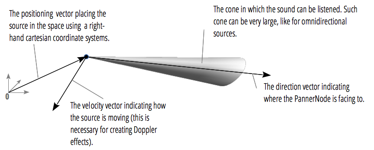
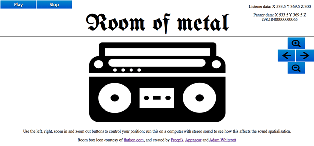

This article needs a technical review. How you can help.
As if its extensive variety of sound processing (and other) options wasn't enough, the Web Audio API also includes facilities to allow you to emulate the difference in sound as a listener moves around a sound source, for example panning as you move from the left hand side of your TV across to the right. The official term for this is spatialization, and this article will cover the basics of how to implement such a system.
The easiest use case to imagine for this capability is realistic alterations in how an audio source will sound as you move around it in a 3D environment like a first-person game.
Basic concepts
Creating an audio spatialization involves two main objects:
- The
AudioListenerobject represents the position in 3D space of a person listening to an audio source, and is accessed using theAudioContext.listenerproperty. You can set the position and orientation of this listener, among other things. - The
PannerNodeobject represents the position in 3D space of an audio source, and is created using theAudioContext.createPanner()method. You can set a number of different options for this method, including the position, orientation, velocity, and angle of a cone indicating what direction the sound can be heard in (if you don't want the sound to be omnidirectional.)
You have to set the position and other options for these two objects, and the browser does the rest, working out what the audio should sound like as a result. The below diagram shows the different things that can be controlled in the case of a PannerNode.

We'll keep things very simple in this basic article, and only really concentrate on the position of the listener and panner, which are set using the setPosition() method in both cases. This takes three unitless values that specify X, Y, and Z values in a cartesian coordinate system.
Note: Working out what values to use so that your use case works effectively and sounds realistic can be fiddly and time consuming, and you generally just have to work the values out as you go. We'll discuss this more as we walk through the code below.
Other available options that we won't cover here are:
setOrientation(): Available for both the listener and panner, this sets the orientation. This takes six values: the first three represent a front direction vector in 3D space (imagine a person and the direction their nose is pointing forward in) and the second set of three represents an up direction vector in 3D space (imagine the same person and the direction their head is pointing up in)setVelocity(): Available for the panner only, this allows you to set the velocity the audio source is moving in, as a velocity vector in 3D space (X, Y, and Z values.) When set, the browser will apply a doppler shift effect.coneInnerAngle,coneOuterAngle, andconeOuterGain: Available for the panner only, these allow you to set an angle inside/outside of which the volume will be reduced by the specified gain value. This is done to specify directional audio sources, but the default is 360/360/0, respectively, meaning that by default you get an omnidirectional sound source.
A simple demo: Room of metal
In our demo, you can move left and right past a 2.5D stereo that can be made to play a groovy tune, and you can also move towards the stereo. As you move left and right, the tune will pan to emulate how the tune will sound as you change your position proportional to the sound source. When you zoom in and out, the sound will get louder and quieter to suit.

Note: You can see this example running live, and view the source code.
Let's walk through the code and see how this was actually done.
Defining basic variables
First we define a new audio context, panner, listener, and source:
var AudioContext = window.AudioContext || window.webkitAudioContext; var audioCtx = new AudioContext(); var panner = audioCtx.createPanner(); var listener = audioCtx.listener; var source;
Next we grab the objects on the page we are using for our demo. First the play and stop buttons to control the audio, then the boomBox, which is just the graphic of the stereo that we are moving around. After that, we grab a reference to two paragraphs that are used to output the position of the listener and panner, for debugging purposes.
var play = document.querySelector('.play');
var stop = document.querySelector('.stop');
var boomBox = document.querySelector('.boom-box');
var listenerData = document.querySelector('.listener-data');
var pannerData = document.querySelector('.panner-data');
Working out listener and panner positions
Next comes a little bit of slightly fiddly maths. We want to make the boomBox, listener, and panner appear in the center of the screen initially, so we work out the width and height of the viewport, and divide both by two to get our X and Y values for those things. The zPos is only used on the panner, and is updated as the zoom controls are used (see later on); the initial value of 295 was decided on fairly arbitrarily — it sounded good. As long as you set the position of the panner appropriately in relation to the listener position, you will be ok.
Next for this section, we set a leftBound and rightBound, which is the furthest we want our stereo graph to travel left and right. For the layout, we are using Flexbox to initially place the boomBox right in the center of the viewport, after which we then use iterative transforms and window.requestAnimationFrame() to apply the boomBox movement. Therefore the "0" position is in the center of the viewport so the rightmost position is that position plus half the viewport, but minus 50 (pixels) so the boomBox can't shoot all the way off the right of the screen, and the leftmost position is that position minus half the viewport, but plus 50 (pixels), so the boomBox can't shoot all the way off the left of the screen.
The last part of this code is the xIterator — we set this to a 150th of the screen width, and then move the boomBox left and right by this amount when the left and right controls are pressed. We use this rather than a constant so that the app is a little more responsive.
var WIDTH = window.innerWidth; var HEIGHT = window.innerHeight; var xPos = WIDTH/2; var yPos = HEIGHT/2; var zPos = 295; leftBound = (-xPos) + 50; rightBound = xPos - 50; xIterator = WIDTH/150;
Next we set the position of the listener and output the coordinates to the listenerData paragraph. It is always going to be in the same place, in a good position relative to the panner.
listener.setPosition(xPos,yPos,300); listenerData.innerHTML = 'Listener data: X ' + xPos + ' Y ' + yPos + ' Z ' + 300;
In the positionPanner() function, we set the position of the panner, and output the coordinates to the pannerData paragraph. This function is called with each animation frame as the boomBox is moved, so the panner position updates accordingly:
function positionPanner() {
panner.setPosition(xPos,yPos,zPos);
pannerData.innerHTML = 'Panner data: X ' + xPos + ' Y ' + yPos + ' Z ' + zPos;
}
Loading and playing our music
Next we use XHR to load an audio track, and decodeAudioData() to decode it and stick it in a buffer. Then we put the buffer into an AudioBufferSourceNode:
function getData() {
source = audioCtx.createBufferSource();
request = new XMLHttpRequest();
request.open('GET', 'viper.ogg', true);
request.responseType = 'arraybuffer';
request.onload = function() {
var audioData = request.response;
audioCtx.decodeAudioData(audioData, function(buffer) {
myBuffer = buffer;
source.buffer = myBuffer;
source.connect(panner);
panner.connect(audioCtx.destination);
positionPanner();
source.loop = true;
},
function(e){"Error with decoding audio data" + e.err});
}
request.send();
}
The next stage is to wire up the buttons to stop and play the audio. The pulse wrapper is an extra wrapper <div> wrapped around the boomBox. We apply the pulsating (scaleY) animation to this element when the play button is clicked, not the boomBox itself, because the boomBox already has animations applied to it throughout the course of the app's running.
var pulseWrapper = document.querySelector('.pulse-wrapper');
play.onclick = function() {
getData();
source.start(0);
play.setAttribute('disabled', 'disabled');
pulseWrapper.classList.add('pulsate');
}
stop.onclick = function() {
source.stop(0);
play.removeAttribute('disabled');
pulseWrapper.classList.remove('pulsate');
}
Moving the boom box and the panner
The next section of code grabs references to the left, right, zoom in, and zoom out buttons, and defines initial X, Y, and scale amounts for the boomBox to be positioned by when the transforms first start to be applied.
var leftButton = document.querySelector('.left');
var rightButton = document.querySelector('.right');
var zoomInButton = document.querySelector('.zoom-in');
var zoomOutButton = document.querySelector('.zoom-out');
var boomX = 0;
var boomY = 0;
var boomZoom = 0.25;
Now we get to the four functions that control the left, right, zoom in, and zoom out functionality: moveRight(), moveLeft(), zoomIn(), and zoomOut(). Each is a little different, but works in a similar way:
- The
boomXorboomZoomvariables are updated in order to change theboomBox's position on the screen. - The
xPosorzPosvariables are updated in order to change thePannerNode's position in 3D space. The changes are quite small, but these are the values we found to work. - A check is done to see if the upper bounds of movement have been reached (a
boomXequal or less thanleftBoundor greater thanrightBound, or aboomZoomgreater than 4 or equal or less than 0.25.) If so, the values are updated to force theboomBoxto stay in certain constraints, and to force thexPosandzPosvariables to also stay within certain constrants. These are, respectively, 5 greater or less thanWIDTH/2, and azPosbetween 295 and 299.9. These are the values we found produced a relatively realistic sounding panning and volume adjustment as theboomBoxwas moved around. boomBoxis transformed (translated and scaled) by the new values ofboomX,boomY, andboomZoomto move it around the screen.- The
positionPanner()function is run to update the position of the panner. - A
window.requestAnimationFrameinstance is called to keep running the function for as long as the mouse button is pressed down. - The
requestAnimationFrameID is returned out of the function so that it can be cancelled when the mouse button is released.
function moveRight() {
boomX += -xIterator;
xPos += -0.066;
if(boomX <= leftBound) {
boomX = leftBound;
xPos = (WIDTH/2) - 5;
}
boomBox.style.webkitTransform = "translate(" + boomX + "px , " + boomY + "px) scale(" + boomZoom + ")";
boomBox.style.transform = "translate(" + boomX + "px , " + boomY + "px) scale(" + boomZoom + ")";
positionPanner();
rightLoop = requestAnimationFrame(moveRight);
return rightLoop;
}
function moveLeft() {
boomX += xIterator;
xPos += 0.066;
if(boomX > rightBound) {
boomX = rightBound;
xPos = (WIDTH/2) + 5;
}
positionPanner();
boomBox.style.webkitTransform = "translate(" + boomX + "px , " + boomY + "px) scale(" + boomZoom + ")";
boomBox.style.transform = "translate(" + boomX + "px , " + boomY + "px) scale(" + boomZoom + ")";
leftLoop = requestAnimationFrame(moveLeft);
return leftLoop;
}
function zoomIn() {
boomZoom += 0.05;
zPos += 0.066;
if(boomZoom > 4) {
boomZoom = 4;
zPos = 299.9;
}
positionPanner();
boomBox.style.webkitTransform = "translate(" + boomX + "px , " + boomY + "px) scale(" + boomZoom + ")";
boomBox.style.transform = "translate(" + boomX + "px , " + boomY + "px) scale(" + boomZoom + ")";
zoomInLoop = requestAnimationFrame(zoomIn);
return zoomInLoop;
}
function zoomOut() {
boomZoom += -0.05;
zPos += -0.066;
if(boomZoom <= 0.25) {
boomZoom = 0.25;
zPos = 295;
}
positionPanner();
boomBox.style.webkitTransform = "translate(" + boomX + "px , " + boomY + "px) scale(" + boomZoom + ")";
boomBox.style.transform = "translate(" + boomX + "px , " + boomY + "px) scale(" + boomZoom + ")";
zoomOutLoop = requestAnimationFrame(zoomOut);
return zoomOutLoop;
}
In the final block of code, we simply wire up event handlers to control the movement when the buttons are pressed. For each button, the relevant function is invoked onmousedown; then onmouseup, window.cancelAnimationFrame is called along with the returned requestAnimationFrame() ID to stop the animation happening.
leftButton.onmousedown = moveLeft;
leftButton.onmouseup = function () {
window.cancelAnimationFrame(leftLoop);
}
rightButton.onmousedown = moveRight;
rightButton.onmouseup = function () {
window.cancelAnimationFrame(rightLoop);
}
zoomInButton.onmousedown = zoomIn;
zoomInButton.onmouseup = function () {
window.cancelAnimationFrame(zoomInLoop);
}
zoomOutButton.onmousedown = zoomOut;
zoomOutButton.onmouseup = function () {
window.cancelAnimationFrame(zoomOutLoop);
}
Summary
As you can see, the actual panner code is pretty simple — specify the positions, and the browser takes care of the rest. It is working out the surrounding code, and the values to use for positioning, which takes a bit more time.
Note: You are probably thinking "why didn't you move the listener and keep the panner still instead: surely that is a bit more obvious?" Well, perhaps, but we felt that since the panner has more methods and properties available to it, moving it would allow more control in the long term.